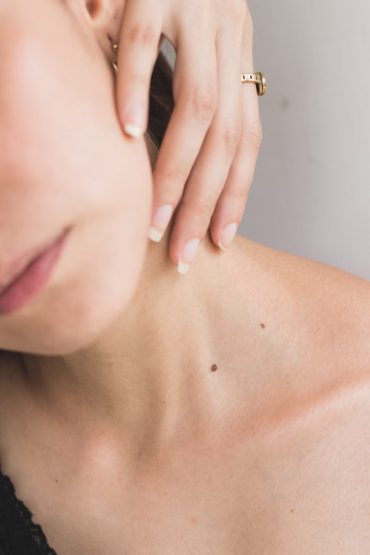

Чувствительная кожа: проблемы, причины и уход

17.01.2022

1 034

5 мин
Термин «чувствительная кожа» был сформулирован в 1960-х годах.
Под этим определением понимают меньшую или большую способность кожи реагировать на внешние или внутренние раздражители.
Обычно симптомы проявляюется в виде жжения, покалывания или чувства стянутости.
Ощущается преимущественно в области носогубной складки, подбородка и лба.
По статистике, чувствительную кожу имеют 44,6% населения США и 38,4% европейцев, то есть примерно половина населения этих континентов.
Классификация
Единой классификации синдрома чувствительной кожи нет, поскольку его сложно диагностировать и составить клиническую картину.
Тем не менее принято разделять проблему на категории:
- По внешним проявлениям: дерматит, экзема, крапивница, розацеа и другие.
- По выраженности высыпаний: акне, розацеа, субъективные ощущения (зуд, жжение и т.д.) и нарушение барьерных функций. Например: контактный дерматит.
- По провоцирующим факторам. Например: алкоголь, использование косметики, менопауза и менструальные циклы.
Причины и условия
Существует множество факторов, которые способствуют появлению или усилению чувствительности кожи.
А сочетание нескольких факторов удваивает шансы диагностировать у себя это состояние.
Пол
Чувствительная кожа встречается у 51% женщин и 38% мужчин.
Это обусловлено тем, что верхний слой кожи у мужчин значительно толще, чем у женщин.
Кроме того, мужчины менее подвержены влиянию гормональных факторов.
Возраст
Основная возрастная группа, где наблюдается чувствительна кожа, от 18 до 50 лет.
Пик приходится на 21–25 лет. Далее с возрастом чувствительность идет на спад.
Стресс
Неблагоприятный эмоциональный фон усиливает работу сальных желез и увеличивает воспаления.
Генетика
Часто предрасположенность к чувствительности кожи передается по наследству.
Экология
Холод, ветер, ультрафиолет и резкая смена температур усиливает выработку молекул, способствующих воспалениям.
Пищевые раздражители
Алкоголь, кофе, пряности усиливают реакции сосудов, и это приводит к повышенной восприимчивости кожи.
Дерматологические заболевания
В 90% случаев атопический и аллергический дерматиты приводят к нарушению барьерной функции кожи.
Факторы риска
Недостаточное увлажнение
Барьерные функции кожи обеспечиваются её верхним слоем – эпидермисом.
Особую роль играет роговой слой. В идеале водный баланс в роговом слое должен коррелироваться водным балансом окружающей среды.
Однако, как правило, это уравнение не соблюдается.
За поддержание нормальной увлажненности рогового слоя отвечают специальные межклеточные липиды.
Из-за их уменьшения барьерные свойства кожи нарушаются.
Это происходит, в том числе при воздействии агрессивных веществ, например кремов и мазей.
Нарушение со стороны липидов рогового слоя приводит к проницаемости кожи.
Наследственность
Еще один фактор риска для нарушения барьерной функции – это более тонкий роговой слой на генетическом уровне.
Через истонченный кожный покров лучше проникают разные вещества как с высокой (спирт, эфир), так и низкой (мочевина, глюкоза и др.) константой проницаемости.
Это нужно учитывать при выборе уходовой косметики, если есть наследственная предрасположенность к чувствительной коже.
Стресс
Следующий фактор – стресс. На клеточном уровне при стрессе повышается выброс нейротрансмиттеров, или сигнальных молекул,
которые вызывают активацию работы сальных желез и воспалительные реакции.
Вспомните, когда вас что-то выводит из равновесия, щёки заливаются румянцем.
Так работает реакция кожи на психологические раздражители.
Поэтому советы о минимизации стресса – не голословные утверждения.
Как жить с чувствительной кожей

На сегодняшний день чувствительная кожа – это абсолютно нормально, и большинство её обладателей при должном уходе не замечает проблем.
Особое внимание следует уделить выбору средств ежедневного, базового ухода.
Приоритет нужно отдать специальным косметическим продуктам для чувствительной кожи.
Ингредиенты лечебно-косметического средства должны гармонично сочетаться с выбранными медикаментами.
При первых проявлениях розацеа, используйте гель Метрогил®гель – противомикробное средство, подходящее для чувствительной кожи.
Основной целью применения специальных уходовых средств является уменьшение порога чувствительности к раздражителям из окружающей среды.
Для достижения этой цели необходимо восстановить содержание липидов рогового слоя, структуру и функции кожного барьера.
Литература:
- Чеботарев В.В., Чеботарева Н.В., Асхаков М.С., Бронникова Е.В. Чувствительная кожа: причины, методы терапии. Научная статья по специальности «Фундаментальная медицина» // Медицинский вестник Северного Кавказа. – 2015. г
- Каиль-Горячкина М.В., Белоусова Т.А. Синдром чувствительной кожи в практике врача-дерматолога. Consilium Medicum. Дерматология (прил.). – 2016.